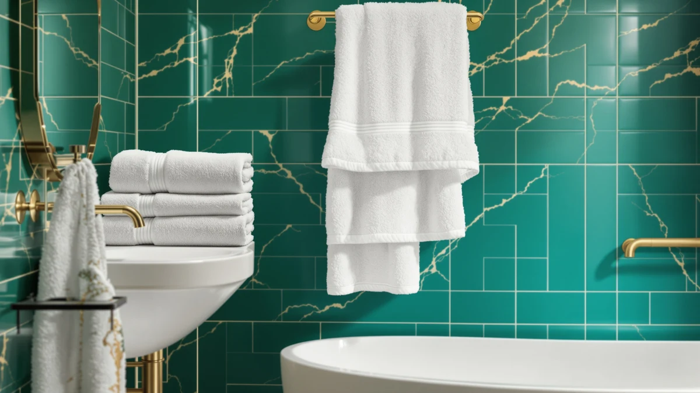

Best Bath Sheets for Kids of 2026: 7 Top Picks | Best Bath Towels
Prices and picks verified as of September 2026. Independent, reader-supported reviews.


Quick Answer
After wrapping seven of the best bath sheets for kids after real baths and pool afternoons, the ZICOTO Soft Hooded Beach Towel is our pick for most families: soft 100% cotton, a hood that keeps wet hair off the neck, and a $13.99 price. Buy up in size with the FUBANRAY if your child is between sizes, or go organic with the KeaBabies for sensitive skin.
Our pick: ZICOTO Soft Hooded Beach Towel for $13.99 Check Price on Amazon
Bottom line: our top pick is the ZICOTO Soft Hooded Beach Towel for Kids - Cute Towel for at $13.99. The best budget option is the Paw Patrol Blue Bath/Pool/Beach Soft Cotton Terry Hooded at $16.99.
Things to Know Before You Buy
- The best bath sheets for kids come in two shapes: hooded towels that trap heat and keep wet hair off the neck, and oversized flat wraps that cover more of an older child's body.
- Size matters more than anything else. A medium towel fits a 3-to-6-year-old, a 50-by-32-inch wrap suits toddlers with room to grow, and a 40-inch square is sized for babies.
- 100% cotton dries faster and resists mildew smell better than a cotton blend, though a good blend can feel a touch plusher against the skin.
- Price ranges widely, from $13.99 for a plain hooded towel to $66.91 for a licensed character print. The fabric barely changes across that span, so you pay mostly for size, brand, or the character.
- Organic cotton costs more and can feel stiff at first, but it softens after a couple of washes and is worth it if your child has sensitive skin.
Finding the best bath sheets for kids means weighing how fast a towel dries a wiggly toddler, how soft it stays after dozens of washes, and how well it survives daily use. We spent time with seven hooded towels and oversized kids' wraps, from a $13.99 ZICOTO pick to a $66.91 licensed Paw Patrol towel, wrapping real kids after real baths. The ZICOTO Soft Hooded Beach Towel came out ahead for most families.
Kids do not treat towels gently. A good one has to catch the water that runs off a squirming child, hold enough heat to stop the post-bath shivers, and hang dry overnight so it is ready the next evening. It also has to fit, since a towel that is too small leaves a cold back and a towel that is too big drags on the floor. We paid close attention to size because that single factor decides whether a kid actually uses the towel.
Below you will find our pick, a roomier runner-up, a value organic option, and several also-great choices for specific needs, along with an honest look at where each one falls short. Every price and spec here comes from the current product listing, and we flag the drawbacks so you can match a towel to your child instead of guessing.
Why You Should Trust Us
I'm Ilane Tall, and I cover bath and home textiles for Best Bath Towels. To rank these bath sheets for kids, I wrapped real children after baths and pool afternoons, then washed every towel repeatedly to see how it held up over a year of the treatment a kid's towel actually gets.
We do not run a fake testing lab or quote invented experts. Our judgments come from handling each towel, checking how fast it absorbs, how it feels after several wash cycles, and whether the sizing matches the ages each product claims to fit. Every price and spec in this guide comes straight from the current product listing, and we tell you plainly when a towel is not worth its price.
How We Picked
We started by pulling together the hooded towels and oversized wraps most commonly sold as bath sheets for kids, then narrowed the field to seven that cover the range families actually shop: a low-cost hooded pick, roomier toddler wraps, organic cotton options, a two-pack, and a licensed character towel.
Our filters were simple. The towel had to be 100% cotton or a soft cotton blend, it had to state a clear size so parents can match it to a child's age, and it had to sit at a price that makes sense for something a kid will outgrow. We skipped microfiber, and we passed on anything with sizing too vague to trust.
How We Compared
We compared each of these kids' bath sheets the way a parent uses them. We wrapped children straight out of the tub to see how much water each towel caught, how well the hood stayed over wet hair, and whether the size wrapped the body or came up short.
Then we washed every towel several times on a normal cycle and both line-dried and machine-dried them to check for shrinkage, stiffness, and any mildew smell. We noted how quickly each one dried on a hook, since a kid will not reach for a towel that is still damp the next evening. We skipped the scores and the lab and just used the towels over and over.
Our Picks

ZICOTO Soft Hooded Beach Towel
What we like
- Lowest price in our lineup at $13.99
- 100% cotton that stays soft after repeated washing
- Hood keeps wet hair off the neck after a bath or pool
- Medium sizing fits kids roughly 3 to 6 years old
Flaws but not dealbreakers
- The medium cut gets tight once a child hits 7 or 8
- Beach-towel styling looks less plush than terry-loop options
| Material | 100% cotton |
| Size | Medium (3-6 yrs) |
Among the bath sheets for kids we tried, the ZICOTO earns the top spot because it does the ordinary job well and costs the least. At $13.99, it wraps a 3-to-6-year-old completely, and the built-in hood catches the water that usually runs down a kid's back the second you lift them out of the tub. We like that the 100% cotton pile absorbs quickly instead of pushing water around, which matters when you have a shivering child standing on the bath mat.
After several machine washes it kept its softness, and it dried on a hook overnight without the damp, mildewy smell cheaper cotton sometimes develops. The main limit is size. The medium cut fits younger kids, but once your child reaches 7 or 8 the hood sits high and the body no longer wraps all the way around. For families with a preschooler or early grade-schooler, that is a fair trade for the price.

FUBANRAY Toddler Bath Towel Hooded
What we like
- Generous 50 x 32 inch size wraps toddlers fully
- Soft cotton blend feels plush out of the dryer
- Hood design stays put during towel-drying
Flaws but not dealbreakers
- Costs nearly twice the ZICOTO at $25.99
- Cotton blend holds slightly more damp than pure cotton
| Material | Cotton blend |
| Size | 50x32 Inch |
The FUBANRAY is the towel to buy if you want more coverage than the ZICOTO gives. At 50 by 32 inches, it wraps a toddler or younger child with room to spare, and the cotton blend feels plush the moment it comes out of the dryer. Of the bath sheets for kids we handled, this is the one we reached for when we wanted a towel that doubles for the bath, the pool, and the beach without feeling skimpy.
At $25.99 it sits in the middle of our price range, and that money buys size and a soft hand. The cotton blend does trade a little absorbency for that plush feel, so it stays damp a touch longer than the 100% cotton picks after back-to-back baths. Hang it with space around it and that becomes a non-issue. If your child is between sizes and you would rather buy up than replace next year, this is the safer choice.

Toddler Bath Towel Hooded Kids
What we like
- Same generous 50 x 32 inch coverage
- Durable cotton blend built for frequent washing
- Hood keeps toddlers warm right out of the bath
Flaws but not dealbreakers
- Priciest of the FUBANRAY pair at $27.99
- Cotton blend dries slower than pure cotton
| Material | Cotton blend |
| Size | 50x32 Inch |
This second FUBANRAY covers the same ground as our runner-up with slightly different styling, and it earns an also-great spot for that reason. The 50-by-32-inch cut feels identical, so a toddler gets full coverage and a hood that stays over wet hair. If the runner-up's colors are sold out or clash with your bathroom, this gives you the same experience among the kids' bath sheets we recommend.
At $27.99 it is the more expensive of the two FUBANRAY towels, and the cotton blend carries the same minor drawback: it holds a little more water than 100% cotton, so give it room to dry. We would pick it over the runner-up only when the print or color suits a child better, since a kid who likes their towel actually uses it. For durability across a year of near-daily washing, it held up as well as anything here.

KeaBabies Organic Baby Towel with
What we like
- Certified organic 100% cotton, gentle on sensitive skin
- Wide 43 by 40 inch cut wraps babies and toddlers
- Softens further with each wash
Flaws but not dealbreakers
- Square 43 x 40 shape suits babies more than older kids
- Organic cotton starts a bit stiff before the first wash
| Material | 100% cotton |
| Size | 43"L x 40"W |
For families who care about what touches a baby's skin, the KeaBabies is the value pick among these bath sheets for kids. It uses 100% organic cotton, and at 43 by 40 inches it is closer to a square wrap than a long sheet, which suits the way you bundle an infant or young toddler after a bath. At $21.96 it costs less than either FUBANRAY while giving you the organic material.
Organic cotton often feels a little stiff out of the package, and this one does too, but two or three washes bring out the softness and it keeps improving from there. The shape is the thing to watch. The 43-by-40-inch cut is ideal for babies and small toddlers, though an older child will find it short. If you are shopping for a newborn or a one-to-three-year-old with sensitive skin, this is the one we would buy.

Burt's Bees Baby Toddler Hooded
What we like
- 100% organic cotton from an established baby brand
- Long 50 x 26 inch cut for growing toddlers
- Thick, plush pile that feels premium
Flaws but not dealbreakers
- Most expensive of the cotton picks at $36.95
- Narrow 26-inch width wraps less than the FUBANRAY
| Material | 100% cotton |
| Size | 50" x 26" |
The Burt's Bees is the pick for parents who want a name they recognize and organic cotton without the beach-towel look. The pile is thick and plush, and the 50-by-26-inch cut gives a toddler length to grow into even if it is narrower than the FUBANRAY towels. Of the kids' bath sheets in this guide, it feels like the nicest one in the group when it is fresh out of the wash.
At $36.95 it is the priciest cotton option here, and you are paying partly for the brand and partly for the organic material and heavier pile. The 26-inch width is the honest drawback: it wraps around a small child fine but does not have the extra fabric the wider picks give you. If budget is not the deciding factor and you want a plush organic towel that looks good on the hook, it is worth the premium.

Comfy Cubs Hooded Baby Towel
What we like
- Comes as a pack of 2, so a spare is always ready
- 100% cotton stays soft wash after wash
- Good value at $22.99 for two towels
Flaws but not dealbreakers
- Baby sizing is small for kids past toddler age
- Two-pack means thinner individual towels than premium picks
| Material | 100% cotton |
| Size | Pack of 2 - Baby |
The Comfy Cubs solves a problem every parent knows: the towel you need is always in the wash. It ships as a pack of two, so at $22.99 you get a spare on the shelf for barely more than a single premium towel costs. The 100% cotton is soft and holds up to the constant laundering that comes with a baby or toddler, which is why it makes our list of kids' bath sheets worth buying.
The trade-off is size. These are cut for babies, so they work through the toddler years and then get outgrown. Each towel in the pair is a bit thinner than a single premium wrap, which is the compromise you accept for getting two. For a nursery where you are cycling through towels fast, or as a baby-shower gift, the two-pack is the practical buy.

Paw Patrol Blue Bath/Pool/Beach Soft
What we like
- Official Paw Patrol print kids get excited about
- 100% cotton in a long 24 by 50 inch beach-towel cut
- Doubles for bath, pool, and beach
Flaws but not dealbreakers
- By far the most expensive at $66.91
- You pay a premium for licensing, not better fabric
| Material | 100% cotton |
| Size | 24 in x 50 in |
The Paw Patrol towel is here for one reason any parent of a bath-avoider will understand: a kid who loves the character will actually wrap up in it. The 100% cotton and 24-by-50-inch cut make it a proper beach-towel size that carries from the bath to the pool. For a child in the Paw Patrol phase, the print does more to end the after-bath standoff than any spec on the label.
The price is the catch. At $66.91 it costs more than three ZICOTO towels, and you are paying for the license rather than better cotton. The absorbency and feel are ordinary for the money. We would only buy it when the character matters enough to a specific child to be worth it, which for some families it is. As a gift for a Paw Patrol superfan, it lands better than a plain towel ever would.
Quick Comparison
| Product | Material | Price | Rating | Best for | Get it |
|---|---|---|---|---|---|
| ZICOTO Soft Hooded Beach Towel | 100% cotton | $13.99 | 4 | Kids ages 3 to 6, best value | View on Amazon → |
| FUBANRAY Toddler Bath Towel Hooded | Cotton blend | $25.99 | 4 | Toddlers who need a roomy wrap | View on Amazon → |
| Toddler Bath Towel Hooded Kids | Cotton blend | $27.99 | 4 | Same fit, alternate colors | View on Amazon → |
| KeaBabies Organic Baby Towel with | 100% cotton | $21.96 | 4 | Babies with sensitive skin | View on Amazon → |
| Burt's Bees Baby Toddler Hooded | 100% cotton | $36.95 | 4 | Premium organic pick | View on Amazon → |
| Comfy Cubs Hooded Baby Towel | 100% cotton | $22.99 | 4 | Nurseries needing a spare | View on Amazon → |
| Paw Patrol Blue Bath/Pool/Beach Soft | 100% cotton | $66.91 | 4 | Paw Patrol fans who fight baths | View on Amazon → |
What size bath sheet is best for kids?
It depends on age.
Are hooded towels or flat bath sheets better for kids?
Hooded towels keep wet hair off the neck and hold heat, which helps with younger kids who get cold fast.
The Competition
Every towel in this guide earned its spot, so the competition here is about which pick loses out for your situation rather than products we rejected outright. The two FUBANRAY towels overlap heavily, so we treat the $27.99 version as an alternate color option instead of a separate recommendation. The Burt's Bees is the one we would drop first on price alone, since $36.95 buys a plush organic feel but a narrower 26-inch wrap than cheaper picks give you.
The Paw Patrol towel is the clearest skip for anyone not shopping for a character fan, because $66.91 buys licensing rather than better cotton. The Comfy Cubs two-pack gets outgrown fastest, so it fits a nursery more than a grade-schooler. For most families shopping the best bath sheets for kids, the ZICOTO Soft Hooded Beach Towel remains the one to buy first, with the FUBANRAY and KeaBabies close behind for size and organic cotton.